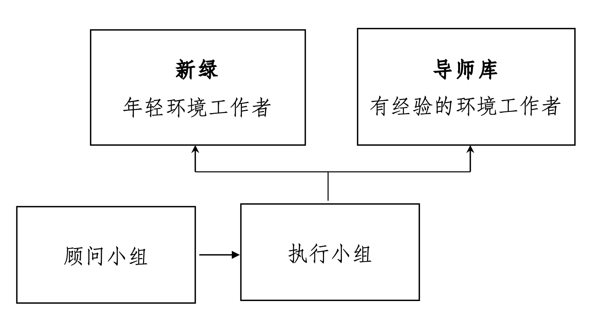

希望你成为新绿，我们共同探索环境可持续发展之路，
希望你成为导师，一同培育环境可持续发展领袖。
我们共同启程：探索，学习，成长，塑造环保事业的未来。
我们的使命
我们希望通过新绿导师机制，让在校大学生们和已经走上与环境与可持续发展议题相关职业道路的青年环境工作者们建立联系，建立一个基于同济“绿色之路”环保协会新老会员，面向更广阔新老环境工作者，长远、低成本、松散灵活、高效运作的交流和传承机制。
我们的模式
新绿”导师机制由执行小组、顾问小组和导师库三个志愿者团队组成，为年轻环境工作者“新绿”服务。
- 执行小组为导师机制的核心工作团队，负责导师机制的设计、更新和具体运作。执行小组每五年轮换一届。
- 顾问小组是导师机制的辅助团队，为导师机制设计和运作提供建议，并负责筹款。顾问任期至少五年，五年后以顾问个人意愿为准。
- 导师库是具有一定工作和社会经验的同济绿协老会员及更广泛的环境工作者，为年轻环境工作者提供职业生涯规划和建议，助力年轻环境工作者成长。导师任期以导师个人意愿为准。

“新绿”导师机制组织结构图
运作机制
- “大学生新绿奖”提供的导师支持为期一年。在此期间，学员和导师遵照荣誉守则互相交流学习，学员按执行小组提供的指引向导师提问，帮助自己了解具体职业生涯的要求和未来可能性。
- 一年后，学员选择一个自己最感兴趣的职业路径，邀请一位导师为自己提供中长期职业生涯规划。受邀导师根据执行小组提供的指引为学员提供咨询和规划。
- 学员每三、五年可以联系该导师，根据实际情况修订职业生涯规划路径。